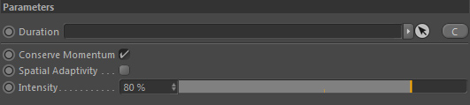

Parameters
Parameters

Duration

Takes a node of type 'duration' in order to define how long the swirling force should operate. See Duration.
If no duration is linked, the force will act indefinetly.
Conserve Momentum
Activating this will take into account momentum conservation
of the flow's vorticity. It is checked by default because it takes nearly
no time at all to be calculated (and is only an option for backward compatibility).
You should always keep it activated.
Spatial Adaptivity

This option spatially adapts the vorticity strength based on flow helicity
and allows much higher values to be used.
It will intensify turbulences only where rolling motions indeed exist and not in places with vorticity alone.
It therefore generates much more stable and realistic turbulences.
Intensity
The intensity of the swirling force.
As the force does only intensify existing motions the intensity should be altered with care.
Too high settings may result in the motions to become too turbulent and the simulation to become a velocity mess.
Note: to avoid these messy velocities use the "Spatial adaptivity" option which results in more stable results.